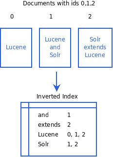
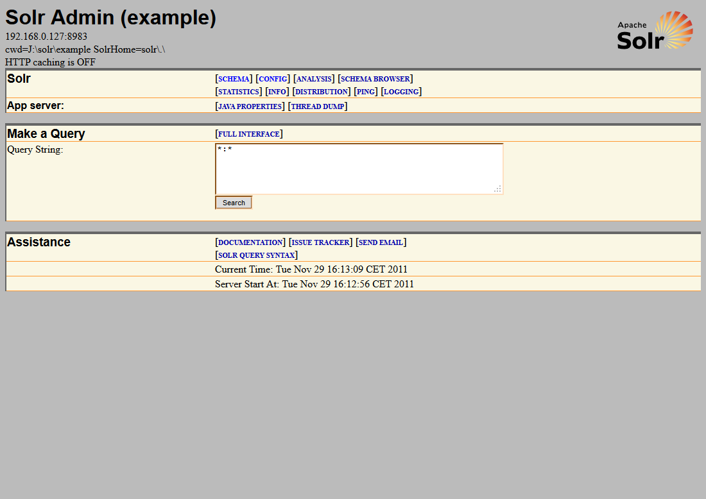
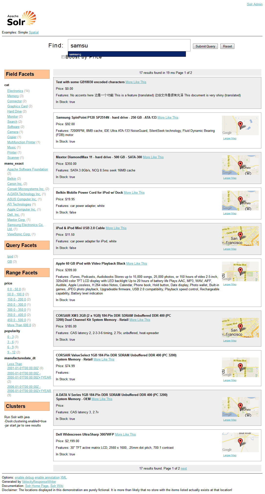

| z, ? | toggle help (this) |
| space, → | next slide |
| shift-space, ← | previous slide |
| d | toggle debug mode |
| ## <ret> | go to slide # |
| c, t | table of contents (vi) |
| f | toggle footer |
| r | reload slides |
| n | toggle notes |
| p | run preshow |

$ wget http://apache.uib.no/lucene/solr/3.5.0/apache-solr-3.5.0.tgz
$ tar zxf apache-solr-3.5.0.tgz
$ cd apache-solr-3.5.0/example
$ java -jar start.jar


<?xml version="1.0" encoding="UTF-8">
<schema name="example" version="3.5">
<uniqueKey>id</uniqueKey>
<defaultSearchField>text</defaultSearchField>
<solrQueryParser defaultOperator="OR" />
<types>
</types>
<fields>
</fields>
</schema><fieldType name="text_ws"
class="solr.TextField"
positionIncrementGap="100">
<analyzer>
<tokenizer class="solr.WhiteSpaceTokenizerFactory" />
</analyzer>
</fieldType><fieldType name="text_general" class="solr.TextField" positionIncrementGap="100">
<analyzer type="index">
<tokenizer class="solr.StandardTokenizerFactory" />
<filter class="solr.StopFilterFactory" ignoreCase="true" words="stopwords.txt" enablePositionIncrements="true" />
<filter class="solr.LowerCaseFilterFactory" />
</analyzer>
<analyzer type="search">
</analyzer>
</fieldType>Remember to comment on the directoryFactory and it's relevance, MMap, NIOFS, SimpleFS
<config>
<luceneMatchVersion>LUCENE_35</luceneMatchVersion>
<dataDir><!-- Location of index files relative to contextpath --></dataDir>
<directoryFactory />
<indexDefaults>
<useCompoundFile>false</useCompoundFile>
<mergeFactor>10</mergeFactory>
<ramBuffer />
</indexDefaults>
<jmx />
<updateHandler class="solr.DirectUpdateHandler2">
<query />
</config><add>
<doc>
<field name="id">3007WFP</field>
<field name="name">Dell Widescreen UltraSharp 3007WFP</field>
<field name="manu">Dell, Inc.</field>
<field name="cat">electronics</field>
<field name="cat">monitor</field>
<field name="features">30" TFT active matrix LCD, 2560 x 1600, .25mm dot pitch, 700:1 contrast</field>
<field name="includes">USB cable</field>
<field name="weight">401.6</field>
<field name="price">2199</field>
<field name="popularity">6</field>
<field name="inStock">true</field>
<!-- Buffalo store -->
<field name="store">43.17614,-90.57341</field>
</doc>
</add>$ curl http://localhost:8983/solr/update?commit=true -H "Content-Type: text/xml" \
--data-binary '<add><doc><field name="id">testdoc</field> \
<field name="price">10.95</field></doc></add>'
// Construct the document
SolrInputDocument doc1 = new SolrInputDocument();
doc1.add("id", 1);
doc1.add("price", 10.5);
// Get server
SolrServer server = new CommonsHttpSolrServer("http://localhost:8983/solr/");
server.add(doc1);
server.commit();require 'rsolr'
solr = RSolr.connect :url => 'http://localhost:8983/solr/'
//A Solr document is simply a hash
solr.add :id => 1, :price => 10.5
solr.commit$ curl http://localhost:8983/solr/select?q=*:*&fl=*&wt=json
{"responseHeader":
{"status":0,
"QTime":0,
"params":
{"fl":"*",
"wt":"json",
"q":"*:*",
"rows":"1"
}},
"response":
{"numFound":17,
"start":0,
"docs":[
{"id":"GB18030TEST",
"name":"Test with some GB18030 encoded characters",
"price":0.0,
"inStock":true,
"features":["No accents here","这是一个功能","This is a feature (translated)","这份文件是很有光泽","This document is very shiny (translated)"]
}
]
}
}SolrServer solrServer = getSolrServer();
// construct query
SolrQuery query = new SolrQuery();
query.setQuery("*.*");
query.addSortField("price", SolrQuery.ORDER.asc);
//Get query response
QueryResponse rsp = solrServer.query(query);
//Get documents
SolrDocumentList docs = rsp.getResults();
solr = RSolr.connect :url => 'http://localhost:8983/solr'
response = solr.get 'select', :params => {
:q => '*:*',
:sort => 'price asc'
}
response["response"]["docs"].each{|doc| puts doc["id"]}<requestHandler name="/replication" class="solr.ReplicationHandler">
<lst name="master">
<str name="replicateAfter">startup</str>
<str name="replicateAfter">commit</str>
<str name="confFiles">schema.xml,stopwords.txt</str>
</lst>
</requestHandler><requestHandler name="/replication" class="solr.ReplicationHandler">
<lst name="slave">
<str name="masterUrl">http://${solr.master.address:localhost}:${solr.master.port:8983}/solr/replication</str>
<str name="pollInterval">00:00:60</str>
</lst>
</requestHandler>